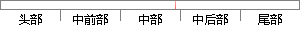

例如，某一窄带信号的信噪比为0dB，接收机噪声带宽为100kHz，那么当信号持续时间分别取10ms、20ms、50ms和100ms的时候，信号带宽分别取10kHz、20kHz和50kHz的时候，时差和频差的理论估计下限如下表所示。
片段位置图

相似结果|
相似片段 1： 10ms、20ms、50ms和 100ms，信号带宽分别取 10kHz、20kHz和 50kHz时，时差与频差估计的理论下限如下表所示。 表 2.1 窄带通信信号时差估计下限表 10kHz 20kHz 50kHz 10ms 1.740?s 0.870?s 0.385?s 20ms 1.230?s 0.615?s 0.246?s 50ms 0.780?s 0.390?s 0.156?s 100ms 0.550?s 0.275?s 0.110?s 表
|
※ 片段修改建议 ※
近似词参考：- 例如：比方
- 信号：旌旗灯号
- 那么：那末
- 信号：旌旗灯号
- 分别：别离 划分 离别
- 时候：时辰 时刻 时间
- 信号：旌旗灯号
- 分别：别离 划分 离别
- 时候：时辰 时刻 时间
- 估计：估量 预计
- 如下：以下
系统自动生成语句：比方，某一窄带旌旗灯号的信噪比为0dB，接收机噪声带宽为100kHz，那末当旌旗灯号持续时间别离取10ms、20ms、50ms和100ms的时辰，旌旗灯号带宽别离取10kHz、20kHz和50kHz的时辰，时差和频差的理论估量下限以下表所示。
注：本片段修改建议为系统自动生成，仅供参考。